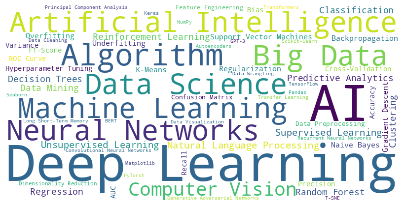
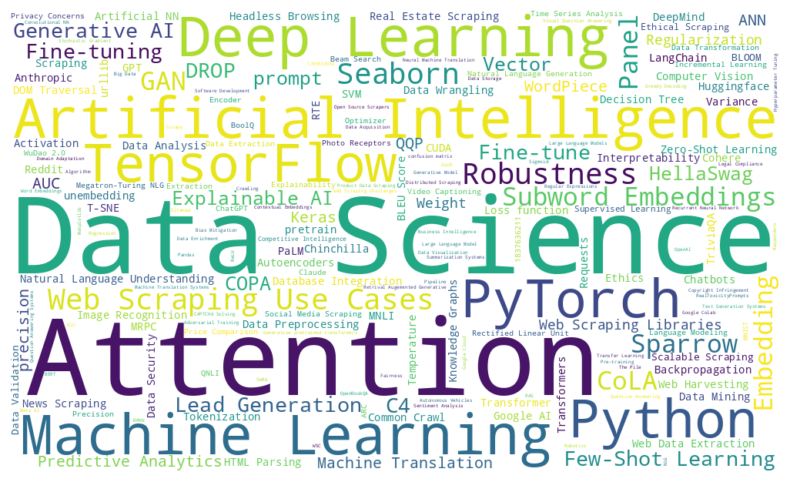

Actively seeking new opportunities | Looking for challenging AI/ML/Data Science/Leading positions to leverage and expand my management and IT skills with cutting-edge technologies, fostering personal and professional growth.
planning, task supervision, thorough training, commitment delegation, mathematical analysis, specialization, standardization, reporting, visualization, ..


honesty, fairness, leadership, integrity, compassion, respect, responsibility, loyalty, law-abiding, transparency, environmental concerns, ..


 
Data Science, Data Analysis Deep Learning Perceptron Backpropagation Multilayer Perceptron Gradient Descent Stochastic Gradient , Optimizer , Photo Receptors , Associators , Responders , Visualization , Data Cleaning , Data Mining , Knowledge Management, Transformers , Machine Learning , Neural Networks , Artificial NN , ANN , Recurrent Neural Network , RNN , BERT , GPT , Huggingface , Pipeline , Jupyter Notebook , ipynb , Python , Loss function , Bias , Weight , Retrival Augemented Generative , LLM , Sigmoid , Rectified Linear Unit, ReLU , CUDA , NVIDIA , ChatGPT , Gemini , Attention , Embedding , RAG , Knowledge Graphs , k-NN , Nearest Neighbors , Regression , Classification , Embeddings , Fine-tune , unembedding , Temperature , OPENAI_API_KEY , API_KEY , Finetuning , prompt , Accuracy , precision , recall , F1-score , confusion matrix , MNIST , Vector , LSTM , pretrain , BRNN , Token , Decision Tree , Support Vector Machines , SVM , GPT , Generative pretrained transformers , Incremental Learning , Batch Learning , Neural Networks , Activation , Generative Adversial Network , GAN , Convolutional NN , CNN , PyTorch , Gradio , Panel , Q&A , LangChain , Google Colab , Models , AI - ML - NN - DL - GenAI - LLM NLP , Natural Language Processing , NLP , Natural Language Understanding , Natural Language Generation , NLU , NLG , Tensor , Large Language Models , LLMs , Generative AI , GenAI , Westindies , Italy , Football , Technological , Automation , 1789533392 , 9781789533392 , Packt Publishing , 1837636211 , 9781837636211 , Web Scraping , quality data , Data Extraction , OCR , Optical Character Recognition , Google Cloud , AWS , Sentiment Analysis , Summarization , Naive Bayes, 0009-0004-1362-8806>
Education: **Araniko Boarding School - Biratnagar, Nepal | Jyoti English School - Dhangadi, Nepal | Siddhartha Vanasthali Institute - Kathmandu, Nepal | Campion College - Kathmandu, Nepal | Himalayan Whitehouse College - Kathmandu, Nepal | Bangor University - Bangor,Wales,UK**